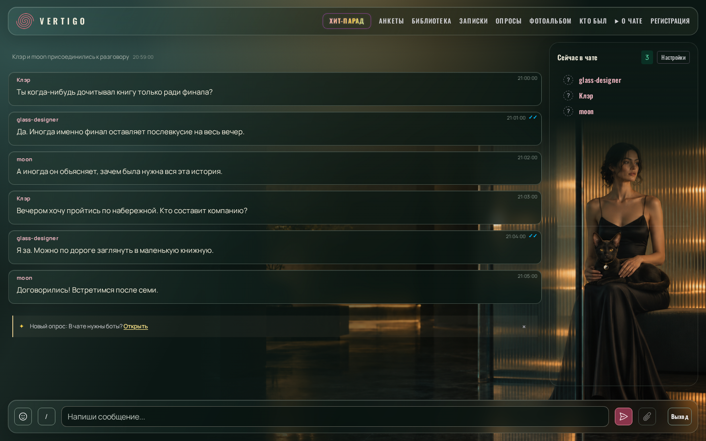
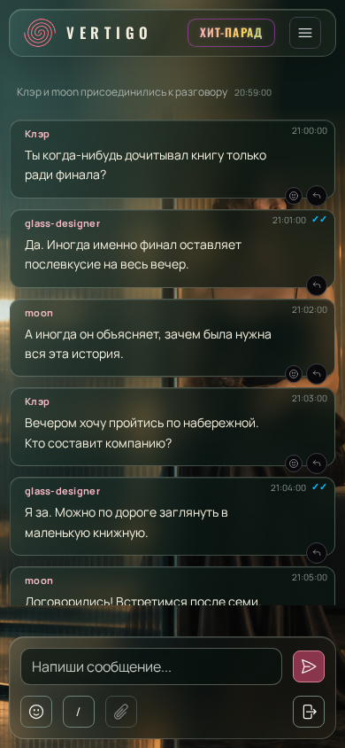
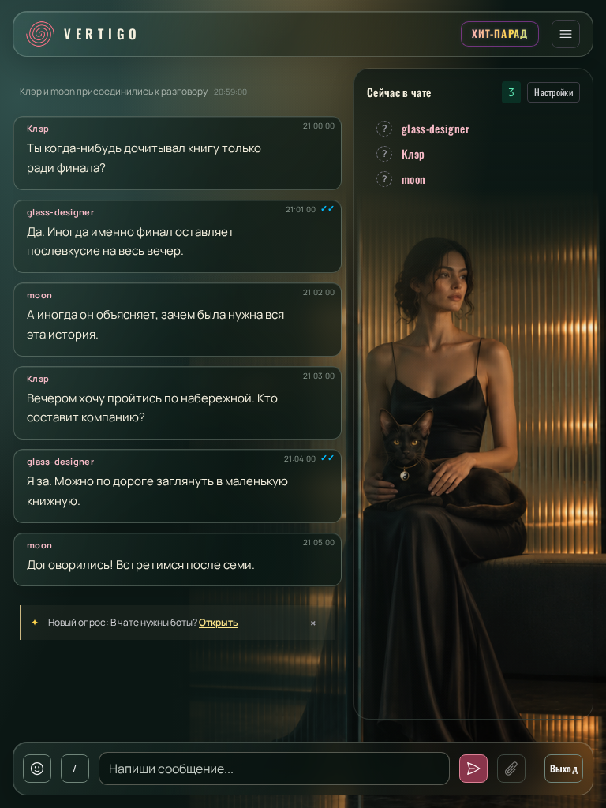

Стекло — Кармик на коленях
Макет: чёрный Кармик, кулон инь-янь, девушка перед стеклом и частично за его краем.
Desktop · 1440 × 900

Mobile · 390 × 844

На телефоне иллюстрация остаётся фоном за перепиской.
Tablet · 768 × 1024
